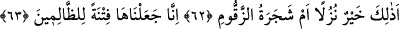
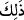
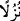
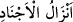
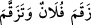

misli daha verilecektir” der. “Cennette canının çektiği ve gözüne hoş görünen, mesrur
ve mutlu olacağın her şey sana verilecektir” buyurur. Kul ise bütün bunlar karşısında
“Razıyım, Ya Rab!” der.
Mûsâ (a.s.) rabbine “Cennet ehlinin derecesi en yüksek olanı kimdir? diye sordu.
Allah Teâlâ “Onlar keramet ağacını benim kudret elimle dikip üzerini mühürlediğim
kimselerdir. Onların keramet, iyilik mevki ve makamlarını hiçbir göz görmemiş, hiçbir
kulak duymamış ve böyle bir şey hiçbir beşerin akıl, hayal ve havsalasına gelmemiştir”
buyurdu.
Evet bunların hepsi bir kurtuluştur; fakat en yüce kurtuluş, işte büyük kurtuluş odur.
Bilindiği gibi dünyada bile padişah ile halk (raiyye) bir değildir. Halkın abası ve urbası
varsa padişahın kaba ve kaftanı vardır. Halkın bir odası varsa padişahın çardağı, sarayı
ve köşkü vardır. Halkın bir lokma ekmeği varsa padişahın çeşitli nimetleri vardır. Bu
böyle uzar gider. İşte dünyada himmet ve maksatlar farklı olunca, ahirette de mertebe ve
dereceler farklı farklıdır. Mükâfat ve ödüller de değişiktir. Allah’ı bulan aynı şekilde
bütün nimetleriyle cenneti de bulmuştur. Fakat her şeyi ile cenneti bulan bir kimse, tam
ve kâmil mânâda Allah’a vâsıl olmuş olmaz. Onunla dostluk kuramaz. Bütün halleri
kuşatan ve bütün zamanları kapsayan nitelikte onun vuslatından haz alamaz. Sen
himmetini yüce tut, himmetin yüceliği imandandır. İmanın gayesi ihsan, iman ve ihsanın
da zirvesi lütuf ve keremi bol olan Allah Teâlâ’nın cemalini müşâhedeye dalmaktır.
62, 63. Şimdi, ziyafet olarak, cennet ehli için anılan bu nimetler mi daha hayırlı,
yoksa zakkum ağacı mı? Biz onu (zakkumu) zâlimler için bir fitne (imtihan) kıldık.
“Şimdi, ziyafet olarak, cennet ehli için anılan bu nimetler mi daha hayırlı, yoksa
zakkum ağacı mı?” Burada “أ” (hemze) takrir içindir. Bundan maksat hemzenin dahil
olduğu ebedi cennete girme, azaptan emin olma ve büyük kurtuluşa erme durumuna
kâfirleri teşvik etmektir. “
” kelimesiyle cennet nimetlerine işaret edilmektedir.
Burada “Yoksa zakkum ağacı mı daha hayırlı?” buyrulmakla kâfirlere alaylı bir tarzda
hitap edilmiştir. “
” kelimesi hal olarak mensuptur ve “misafire hazırlanan yemek”
anlamına gelir. Askerlerin nevâleleri mânâsında “
” de bu kabildendir. Zakkum
nahoş kokulu küçük yapraklı acı bir ağaçtır. Tihâme ve Hicaz Bölgesi’nde olur.
Müşrikler bu ağacı tanır ve bilirler. Allah Teâlâ’nın “Zira o, cehennemin dibinde bitip
yetişen bir ağaçtır” kavlinde nitelikleri anlatılan bu ağaca “zakkum” denilmiştir.
el-Müfredât’ta der ki: Zakkum ağacı cehennemdeki nahoş yiyeceklerden ibarettir. Kişi
nahoş bir şey yutunca mecaz olarak “
” denilir ki zıkkımlandı, zıkkım olsun
şeklinde ifade edilmektedir. Mânâ şöyledir: Elbette cennet nimetleri ve mü’minler için